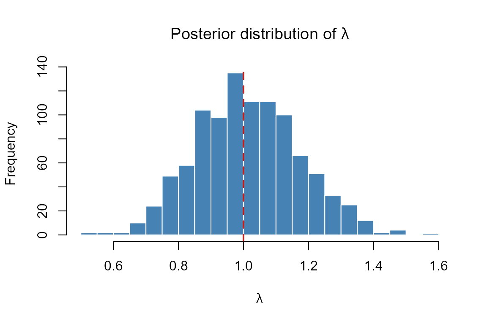
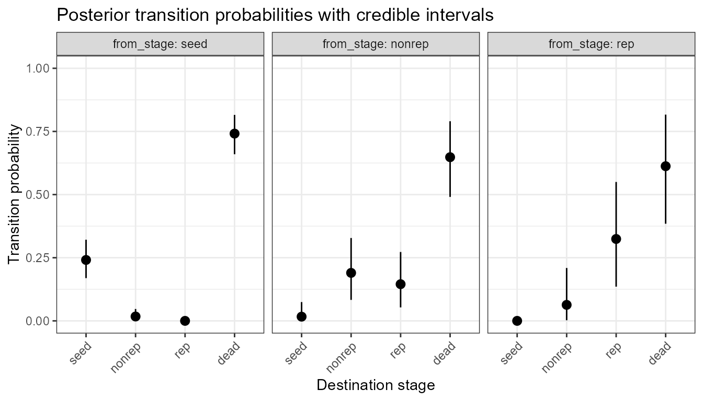
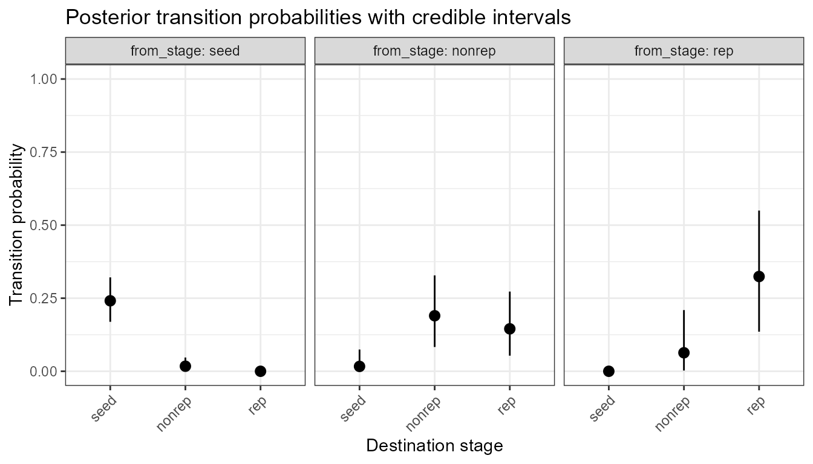
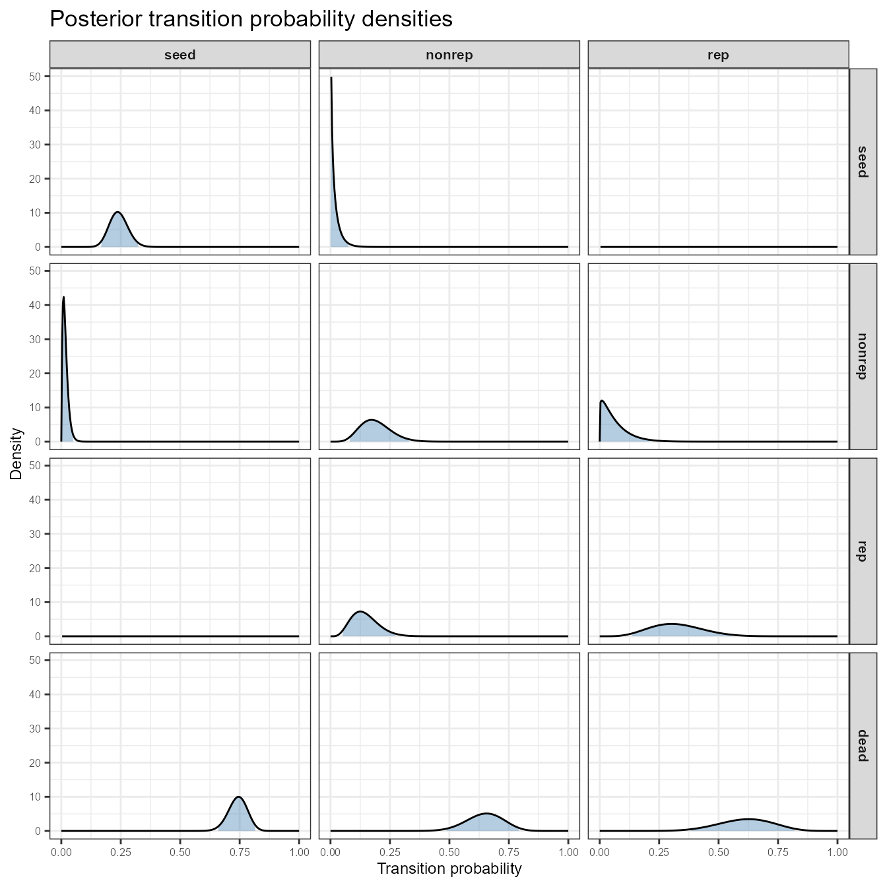
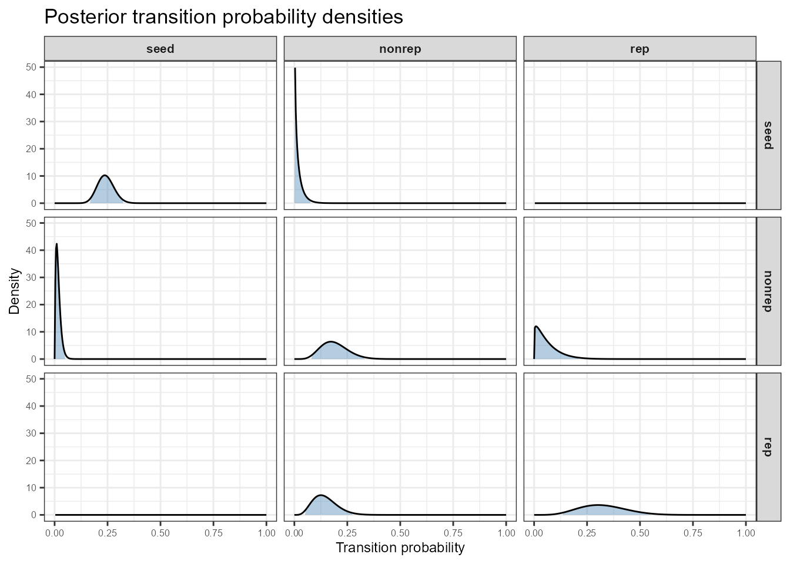

knitr::opts_chunk$set(echo = TRUE, tidy = FALSE, collapse = TRUE, comment = "#>")
library(raretrans)Overview
Matrix population models are a standard tool in ecology for projecting population dynamics and quantifying the contributions of survival, growth, and reproduction to population growth. A population projection matrix is typically split into two components:
- — the transition matrix, whose columns describe the probabilities of surviving and moving between life-history stages (or staying in the same stage).
- — the fecundity matrix, whose entries describe the average number of offspring contributed to each stage by each adult stage.
The full model is , and the asymptotic population growth rate is the dominant eigenvalue of .
Biased estimates from small samples
When populations are small or study periods are short, the observed transition frequencies produce two distinct types of biased estimates:
Structural zeros: biologically possible transitions that are never observed and appear as 0% in the data. These are rare events missed by chance — not truly impossible transitions.
Structural ones: transitions estimated at 100% survival, stasis, or mortality. For example, if all 3 observed juveniles survived, the data suggest 100% juvenile survival — a biologically implausible certainty caused entirely by small sample size.
Both are artefacts of insufficient data, and both distort the matrix:
- A matrix with structural zeros may fail to be ergodic (some stages become unreachable) or reducible (some subsets of stages are disconnected).
- A matrix with structural ones overestimates certainty in vital rates, producing a falsely precise and biologically unrealistic model.
- In either case, the asymptotic growth rate may be substantially biased.
raretrans addresses both problems by using
Bayesian priors to regularise estimates, adding prior
biological knowledge to the observed data so that all transitions
receive a credible, non-extreme estimate.
The example population: Chamaedorea elegans
Throughout this vignette we use a published matrix for the understorey palm Chamaedorea elegans (parlour palm), compiled by Burns et al. (2013) and archived in the COMPADRE Plant Matrix Database (Salguero-Gómez et al. 2015). The population has three life-history stages:
| Stage label | Description |
|---|---|
seed |
Propagule (seed) |
nonrep |
Non-reproductive individual (seedling/juvenile) |
rep |
Reproductive adult |
The transition
()
and fecundity
()
matrices are entered directly below. This is the standard way to provide
data to raretrans when you do not have individual-level
observations.
# ── Transition matrix T ────────────────────────────────────────────────────────
# Each column must sum to ≤ 1 (the remainder is mortality).
# Rows = destination stage; Columns = source stage.
T_mat <- matrix(
c(0.2368, 0.0000, 0.0000, # seed → seed, nonrep, rep
0.0010, 0.0100, 0.0200, # nonrep → seed, nonrep, rep
0.0000, 0.1429, 0.1364), # rep → seed, nonrep, rep
nrow = 3, ncol = 3, byrow = TRUE,
dimnames = list(c("seed", "nonrep", "rep"),
c("seed", "nonrep", "rep"))
)
# ── Fecundity matrix F ─────────────────────────────────────────────────────────
# F[i,j] = average number of stage-i individuals produced by one stage-j parent.
F_mat <- matrix(
c(0, 0, 1.9638, # reproductive adults produce seeds
0, 0, 8.3850, # reproductive adults produce nonreproductive offspring
0, 0, 0.0000), # no fecundity contributions to the reproductive stage
nrow = 3, ncol = 3, byrow = TRUE,
dimnames = list(c("seed", "nonrep", "rep"),
c("seed", "nonrep", "rep"))
)
# ── Wrap in a named list — the format expected by raretrans ────────────────────
TF <- list(T = T_mat, F = F_mat)
TF
#> $T
#> seed nonrep rep
#> seed 0.2368 0.0000 0.0000
#> nonrep 0.0010 0.0100 0.0200
#> rep 0.0000 0.1429 0.1364
#>
#> $F
#> seed nonrep rep
#> seed 0 0 1.9638
#> nonrep 0 0 8.3850
#> rep 0 0 0.0000Each column of
describes one source stage. For example, the column seed
tells us that in one time step a seed has:
- a 23.7% chance of remaining a seed (
seed→seed), - a 0.1% chance of germinating and becoming non-reproductive
(
seed→nonrep), and - the remaining ~76% chance of dying (not shown; implied by the column sum < 1).
The
matrix shows that only reproductive adults (rep) contribute
offspring: each adult produces on average 1.96 seeds and 8.39
non-reproductive individuals per time step. These large fecundity values
are typical for tropical palms that invest heavily in reproduction.
Providing the stage-population vector N
Many functions in raretrans require the starting
number of individuals observed in each stage at the beginning
of the census period. This vector
is used to convert the transition probabilities back to raw counts
(because the Bayesian model works on counts, not proportions).
If you have individual-level data in a data frame you can use
get_state_vector() to extract
automatically (see the onepopperiod vignette for a worked
example). Here we supply it directly, using a hypothetical census of 80
seeds, 25 non-reproductive plants, and 12 reproductive adults.
N <- c(seed = 80, nonrep = 25, rep = 12)
N
#> seed nonrep rep
#> 80 25 12Part 1: Observed matrix and its limitations
Before adding any priors, let us examine the raw matrix.
# Dominant eigenvalue = asymptotic growth rate λ
A_obs <- TF$T + TF$F
lambda_obs <- Re(eigen(A_obs)$values[1])
cat("Observed lambda:", round(lambda_obs, 3), "\n")
#> Observed lambda: 1.171Now look at the column sums of :
colSums(TF$T)
#> seed nonrep rep
#> 0.2378 0.1529 0.1564The seed column sums to only 0.2378. The rest (0.7622)
represents mortality of seeds. Importantly, the transition from
seed to nonrep is 0.001 — very small and
easily missed in a short study. In a small sample we might observe zero
such transitions, leaving a structural zero in the data
matrix even though we know germination happens.
Similarly, the nonrep → rep entry (0.1429)
and the back-transition rep → nonrep (0.0200)
could be missed in small populations. Conversely, if all observed
individuals in a stage survived, the data would show a
structural one (100% survival or stasis) — equally
unreliable because it is driven by small sample size rather than
biology. When either type of bias appears in real data, we need a
principled way to incorporate our biological knowledge and regularise
the estimates.
Part 2: Adding priors with fill_transitions()
Uniform (non-informative) prior
The simplest prior is the uniform Dirichlet prior. It adds a small equal weight to every possible fate. For a 3-stage system there are 4 fates per column (3 stages + death), so a uniform prior with weight 1 adds 0.25 to each fate count.
The prior matrix P has one more row than the
transition matrix
:
the extra row represents death.
# Uniform prior: equal weight to all fates (including death)
P_uniform <- matrix(0.25, nrow = 4, ncol = 3)
fill_transitions(TF, N, P = P_uniform)
#> [,1] [,2] [,3]
#> [1,] 0.236962963 0.009615385 0.01923077
#> [2,] 0.004074074 0.019230769 0.03769231
#> [3,] 0.003086420 0.147019231 0.14513846Compare with the original :
TF$T
#> seed nonrep rep
#> seed 0.2368 0.0000 0.0000
#> nonrep 0.0010 0.0100 0.0200
#> rep 0.0000 0.1429 0.1364The uniform prior has filled in all the zero entries, including the
biologically impossible seed → rep transition.
This is one weakness of a uniform prior: it does not distinguish
between rare-but-possible transitions and impossible ones. This
is an example and should NOT be used as a default prior
in practice.
Informative (expert) prior
A better approach is to use an informative prior that reflects biological knowledge. The prior matrix still has 4 rows (3 stages + death), and ideally each column sums to 1 so that the weight is easy to interpret.
For C. elegans we specify:
- Seeds have a high chance of dying (0.70), a moderate chance of staying as a seed (0.25), and a small chance of germinating to non-reproductive (0.05); the direct jump to reproductive is impossible (0.00).
- Non-reproductive plants mostly stay non-reproductive (0.55) or die (0.25); they can grow to reproductive (0.15) but very rarely revert to seed (0.05).
- Reproductive adults mostly stay reproductive (0.70) or die (0.10); they can revert to non-reproductive (0.15) or, very rarely, to seed (0.05).
P_info <- matrix(
c(0.25, 0.05, 0.00, # → seed
0.05, 0.55, 0.15, # → nonrep
0.00, 0.15, 0.70, # → rep
0.70, 0.25, 0.15), # → dead
nrow = 4, ncol = 3, byrow = TRUE
)
# Verify columns sum to 1
colSums(P_info)
#> [1] 1 1 1Now apply this prior with the default weight of 1 (equivalent to adding 1 individual’s worth of prior “observations”):
T_posterior <- fill_transitions(TF, N, P = P_info)
T_posterior
#> [,1] [,2] [,3]
#> [1,] 0.236962963 0.001923077 0.0000000
#> [2,] 0.001604938 0.030769231 0.0300000
#> [3,] 0.000000000 0.143173077 0.1797538The informative prior fills in the rare transitions without creating
the impossible seed → rep entry (which stays
at 0 because we set that prior entry to 0).
Adjusting prior weight
The priorweight argument controls how strongly the prior
influences the posterior. A weight of 1 (the default) means the prior
counts as 1 individual. Setting priorweight = 0.5 halves
that influence:
fill_transitions(TF, N, P = P_info, priorweight = 0.5)
#> [,1] [,2] [,3]
#> [1,] 0.24120000 0.01666667 0.00000000
#> [2,] 0.01733333 0.19000000 0.06333333
#> [3,] 0.00000000 0.14526667 0.32426667With priorweight = 0.5 and
non-reproductive plants observed, the effective prior sample size for
that column is
individuals, still less than the data. This is the recommended approach:
the prior sample size should be smaller than the observed sample
size so that the data dominate the posterior.
Part 3: Adding priors for fecundity with
fill_fertility()
The fecundity prior follows a Gamma-Poisson
(negative binomial) model. We specify two matrices, alpha
and beta, whose entries are the shape and rate parameters
of the Gamma prior on the Poisson rate. Use NA for entries
that represent stages that cannot reproduce or fates that do not arise
from reproduction.
# alpha = prior "offspring counts"; beta = prior "adult counts"
# Only the (seed, rep) and (nonrep, rep) entries are reproductive
alpha <- matrix(
c(NA, NA, 1e-5,
NA, NA, 1e-5,
NA, NA, NA),
nrow = 3, ncol = 3, byrow = TRUE
)
beta <- matrix(
c(NA, NA, 1e-5,
NA, NA, 1e-5,
NA, NA, NA),
nrow = 3, ncol = 3, byrow = TRUE
)
F_posterior <- fill_fertility(TF, N, alpha = alpha, beta = beta)
F_posterior
#> seed nonrep rep
#> seed 0 0 1.963799
#> nonrep 0 0 8.384994
#> rep 0 0 0.000000The tiny values of alpha and beta (1e-5)
produce a nearly non-informative prior: the posterior fecundity is
almost identical to the observed fecundity because the data completely
dominate. This is the correct behaviour when you have no prior
information about fecundity.
Combined posterior matrix
posterior <- list(
T = fill_transitions(TF, N, P = P_info),
F = fill_fertility(TF, N, alpha = alpha, beta = beta)
)
posterior
#> $T
#> [,1] [,2] [,3]
#> [1,] 0.236962963 0.001923077 0.0000000
#> [2,] 0.001604938 0.030769231 0.0300000
#> [3,] 0.000000000 0.143173077 0.1797538
#>
#> $F
#> seed nonrep rep
#> seed 0 0 1.963799
#> nonrep 0 0 8.384994
#> rep 0 0 0.000000
# Asymptotic growth rate of the posterior matrix
lambda_post <- Re(eigen(posterior$T + posterior$F)$values[1])
cat("Posterior lambda:", round(lambda_post, 3), "\n")
#> Posterior lambda: 1.206
cat("Observed lambda:", round(lambda_obs, 3), "\n")
#> Observed lambda: 1.171The posterior is slightly different from the observed because the prior redistributes a small amount of probability mass from the observed transitions to the rare ones.
Part 4: Other return types
Both fill_transitions() and
fill_fertility() accept a returnType argument
for accessing different representations of the posterior.
Augmented fate matrix (TN)
Setting returnType = "TN" returns the augmented
fate matrix — the raw Dirichlet posterior counts (not divided
by column sums). The extra bottom row gives the posterior count for the
death fate.
TN <- fill_transitions(TF, N, P = P_info, returnType = "TN")
TN
#> [,1] [,2] [,3]
#> [1,] 19.194 0.0500 0.0000
#> [2,] 0.130 0.8000 0.3900
#> [3,] 0.000 3.7225 2.3368
#> [4,] 61.676 21.4275 10.2732This is useful for simulation (see Part 5) and for computing credible intervals directly (see Part 6).
Full projection matrix A
Setting returnType = "A" returns
directly:
fill_transitions(TF, N, P = P_info, returnType = "A")
#> seed nonrep rep
#> seed 0.236962963 0.001923077 1.9638000
#> nonrep 0.001604938 0.030769231 8.4150000
#> rep 0.000000000 0.143173077 0.1797538Alpha and beta vectors (fertility)
Setting returnType = "ab" in
fill_fertility() returns the posterior Gamma
parameters:
fill_fertility(TF, N, alpha = alpha, beta = beta, returnType = "ab")
#> $alpha
#> seed nonrep rep
#> seed NA NA 23.56561
#> nonrep NA NA 100.62001
#> rep NA NA NA
#>
#> $beta
#> [,1] [,2] [,3]
#> [1,] NA NA 12.00001
#> [2,] NA NA 12.00001
#> [3,] NA NA NAPart 5: Simulating matrices and credible intervals on
Point estimates of
do not convey uncertainty. To obtain a credible
interval on the asymptotic growth rate we simulate many
matrices from the posterior distribution using
sim_transitions().
set.seed(20240301) # for reproducibility
# Simulate 1000 projection matrices from the posterior
sims <- sim_transitions(TF, N,
P = P_info,
alpha = alpha,
beta = beta,
priorweight = 0.5,
samples = 1000)
# Extract λ from each simulated matrix
lambdas <- sapply(sims, function(mat) Re(eigen(mat)$values[1]))
# Summarise
cat("Posterior median λ:", round(median(lambdas), 3), "\n")
#> Posterior median λ: 1.009
cat("95% credible interval: [",
round(quantile(lambdas, 0.025), 3), ",",
round(quantile(lambdas, 0.975), 3), "]\n")
#> 95% credible interval: [ 0.729 , 1.338 ]
cat("P(λ > 1):", round(mean(lambdas > 1), 3), "\n")
#> P(λ > 1): 0.516
# Plot
hist(lambdas,
breaks = 30,
main = expression("Posterior distribution of " * lambda),
xlab = expression(lambda),
col = "steelblue", border = "white")
abline(v = 1, lty = 2, lwd = 2, col = "firebrick")
Posterior distribution of the asymptotic growth rate λ for Chamaedorea elegans. The dashed vertical line marks λ = 1 (stable population). Values to the right indicate growth; values to the left indicate decline.
The histogram shows the full posterior uncertainty about
.
P(λ > 1) is the posterior probability that the
population is growing — a more informative summary than a point
estimate alone.
Part 6: Credible intervals on individual transition probabilities
Computing credible intervals with transition_CrI()
transition_CrI() computes the marginal posterior
beta credible intervals for every entry in
,
including the probability of dying. It returns a tidy data frame with
one row per source–destination pair.
cri <- transition_CrI(TF, N,
P = P_info,
priorweight = 0.5,
ci = 0.95,
stage_names = c("seed", "nonrep", "rep"))
cri
#> from_stage to_stage mean lower upper
#> 1 seed seed 0.24120000 1.692728e-01 0.32129406
#> 2 seed nonrep 0.01733333 2.256578e-03 0.04705808
#> 3 seed rep 0.00000000 0.000000e+00 0.00000000
#> 4 seed dead 0.74146667 6.598519e-01 0.81546034
#> 5 nonrep seed 0.01666667 6.264931e-05 0.07442516
#> 6 nonrep nonrep 0.19000000 8.308126e-02 0.32809985
#> 7 nonrep rep 0.14526667 5.337170e-02 0.27271819
#> 8 nonrep dead 0.64806667 4.907560e-01 0.79041606
#> 9 rep seed 0.00000000 0.000000e+00 0.00000000
#> 10 rep nonrep 0.06333333 2.506019e-03 0.20938896
#> 11 rep rep 0.32426667 1.354970e-01 0.54994310
#> 12 rep dead 0.61240000 3.845731e-01 0.81658085Each row gives the posterior mean transition probability and its 95%
symmetric credible interval. The dead rows summarise the
probability of mortality from each source stage.
Visualising credible intervals with
plot_transition_CrI()
plot_transition_CrI(cri)
Posterior mean transition probabilities (points) and 95% credible intervals (lines) for Chamaedorea elegans. Each panel shows the fate distribution from one source stage.
You can hide the death fate if you prefer to focus on the living stages:
plot_transition_CrI(cri, include_dead = FALSE)
As above but excluding the dead fate.
Notice that the credible intervals for the seed →
nonrep transition are very wide, reflecting the fact that
this germination event is rarely observed (only 0.1% per time step in
this matrix). The prior provides a small regularising signal but the
data are sparse, so uncertainty is high.
Visualising the full posterior density with
plot_transition_density()
plot_transition_density() arranges the full marginal
posterior beta density for every transition as a matrix
of panels, mirroring the layout of
.
Each column corresponds to a source stage and each row to a destination
stage. The shaded region is the 95% credible interval.
plot_transition_density(TF, N,
P = P_info,
priorweight = 0.5,
stage_names = c("seed", "nonrep", "rep"))
Posterior beta density for each transition in the C. elegans matrix. Columns = source stage (from); rows = destination stage (to). Shaded region = 95% credible interval. Zero-probability transitions show a degenerate spike at 0.
Panels on the main diagonal (e.g., seed →
seed, rep → rep) tend to have
well-constrained distributions because stasis is commonly observed.
Off-diagonal transitions that are biologically rare show broad, flat
densities — exactly where the prior matters most.
Excluding the death row gives a tighter layout focused on the living stages:
plot_transition_density(TF, N,
P = P_info,
priorweight = 0.5,
stage_names = c("seed", "nonrep", "rep"),
include_dead = FALSE)
As above but excluding the dead fate row.
Summary
This vignette introduced the core workflow of
raretrans:
-
Define your transition matrix
and fecundity matrix
,
either from a data frame (using
popbio::projection.matrix()andget_state_vector()) or by entering them directly. -
Specify a prior matrix
Pthat encodes biological knowledge about which transitions are possible and how likely they are. Prefer informative priors over the uniform default when you have relevant expertise. -
Regularise estimates using
fill_transitions()andfill_fertility()to correct structural zeros, structural ones, and other small-sample biases. -
Simulate many matrices from the posterior with
sim_transitions()to obtain a credible interval on . -
Visualise transition-level uncertainty with
transition_CrI(),plot_transition_CrI(), andplot_transition_density().
For a worked example that starts from individual-level field
observations see vignette("onepopperiod").
References
Burns, J., Blomberg, S., Crone, E., Ehrlén, J., Knight, T., Pichancourt, J.-B.,, Ramula, S., Wardle, G., & Buckley, Y. (2010). Empirical tests of life-history, evolution theory using phylogenetic analysis of plant demography., Journal of Ecology, 98(2), 334–344., https://doi.org/10.1111/j.1365-2745.2009.01634.x
Salguero-Gómez, R., Jones, O. R., Archer, C. R., Buckley, Y. M., Che-Castaldo, J., Caswell, H., …, & Vaupel, J. W. (2015). The COMPADRE Plant Matrix Database: an open online repository for plant demography. Journal of Ecology, 103, 202–218. https://doi.org/10.1111/1365-2745.12334
Tremblay, R. L., Tyre, A. J., Pérez, M.-E., & Ackerman, J. D. (2021). Population projections from holey matrices: Using prior information to estimate rare transition events. Ecological Modelling, 447, 109526. https://doi.org/10.1016/j.ecolmodel.2021.109526